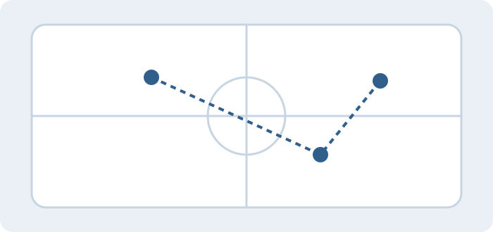

Market intelligence
Cybersecurity M&A Mini Almanac
Research and analysis of cybersecurity deal activity, capital markets, and sector trends.
View project →I enjoy working at the intersection of data, technology, and business — translating complex information into clear insights and practical decisions.

I bring technical curiosity, business perspective, and interpersonal strengths to projects that require careful analysis and clear communication.
Full-time, entry-level opportunities in analytics, cybersecurity, consulting, finance, or related fields. I value strong mentorship, thoughtful collaboration, and opportunities to take ownership.
I like getting into the details, asking good questions, and making technical findings understandable to the people who need to act on them. I care about high-quality work and the people behind it.
Research and analysis of cybersecurity deal activity, capital markets, and sector trends.
View project →
R-based analysis comparing goalie performance and goal scoring as predictors of playoff qualification.
View project →Python analysis of incident patterns, financial losses, attack sources, and defenses.
View project →